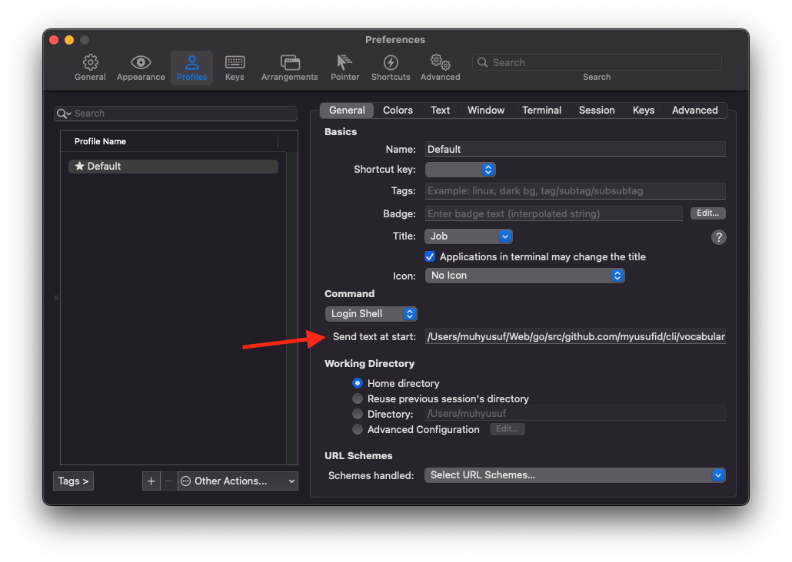

Aplikasi yang diharapkan adalah menampilkan word in english secara random bersama meaning dan examplenya setiap membuka Command Line.
Tujuan
Memperkaya kosakata bahasa English
Dependencies
- Framework CLI golang:
github.com/urfave/cli/v2 - API Dictionary:
https://api.dictionaryapi.dev/api/v2/entries/en/ - List English word:
github.com/bitcoinjs/bip39/blob/master/src/wordlists/english.json - Coloring text on Terminal:
github.com/fatih/color
Struktur Folder
/vocabulary
├── go.mod
├── go.sum
├── vocabulary.go
└── word.jsonImplementation
package main
import (
_ "embed"
"encoding/json"
"fmt"
"github.com/fatih/color"
"io/ioutil"
"log"
"math/rand"
"net/http"
"os"
"strings"
"time"
"github.com/urfave/cli/v2"
)
// ResponseDictionary converted by https://mholt.github.io/json-to-go/
type ResponseDictionary []struct {
Word string `json:"word"`
Phonetic string `json:"phonetic"`
Phonetics []Phonetics `json:"phonetics"`
Meanings []Meanings `json:"meanings"`
License License `json:"license"`
SourceUrls []string `json:"sourceUrls"`
}
type License struct {
Name string `json:"name"`
URL string `json:"url"`
}
type Phonetics struct {
Text string `json:"text"`
Audio string `json:"audio"`
SourceURL string `json:"sourceUrl,omitempty"`
License License `json:"license,omitempty"`
}
type Definitions struct {
Definition string `json:"definition"`
Synonyms []interface{} `json:"synonyms"`
Antonyms []interface{} `json:"antonyms"`
Example string `json:"example,omitempty"`
}
type Meanings struct {
PartOfSpeech string `json:"partOfSpeech"`
Definitions []Definitions `json:"definitions"`
Synonyms []interface{} `json:"synonyms"`
Antonyms []interface{} `json:"antonyms"`
}
type Word []string
//go:embed word.json
var wordJson []byte
func main() {
app := &cli.App{
Name: "vocabulary",
Usage: "get a word today",
Action: func(c *cli.Context) error {
var word Word
err := json.Unmarshal(wordJson, &word)
if err != nil {
return nil
}
rand.Seed(time.Now().UnixNano())
min := 0
max := len(word)
randomNumber := rand.Intn(max - min + 1) + min
wordToday := word[randomNumber]
URIBuilt := fmt.Sprintf("https://api.dictionaryapi.dev/api/v2/entries/en/%v", wordToday)
response, err := http.Get(URIBuilt)
if err != nil {
fmt.Print(err.Error())
os.Exit(1)
}
responseData, err := ioutil.ReadAll(response.Body)
var responseDictionary ResponseDictionary
err = json.Unmarshal(responseData, &responseDictionary)
if err != nil {
log.Fatal(err)
}
color.Set(color.FgYellow)
fmt.Println("Word:",strings.ToTitle(strings.ToLower(responseDictionary[0].Word)))
color.Unset()
fmt.Println("Meaning:", responseDictionary[0].Meanings[0].Definitions[0].Definition)
if responseDictionary[0].Meanings[0].Definitions[0].Example != "" {
fmt.Println("Example:", responseDictionary[0].Meanings[0].Definitions[0].Example)
}
return nil
},
}
err := app.Run(os.Args)
if err != nil {
log.Fatal(err)
}
}
Installation
cd vocabulary
go install
go buildAuto-start Configuration
Biar setiap buka Command Line otomatis jalanin aplikasi golang, buka menu preferences di terminal ZSH, isi Login Shell dengan lokasi executed golang application
Key Features
- Random word selection
- Word definitions and examples
- Colored output for better readability
- Auto-start capability
Source Code
Full source code available on GitHub: vocabulary-cli-golang